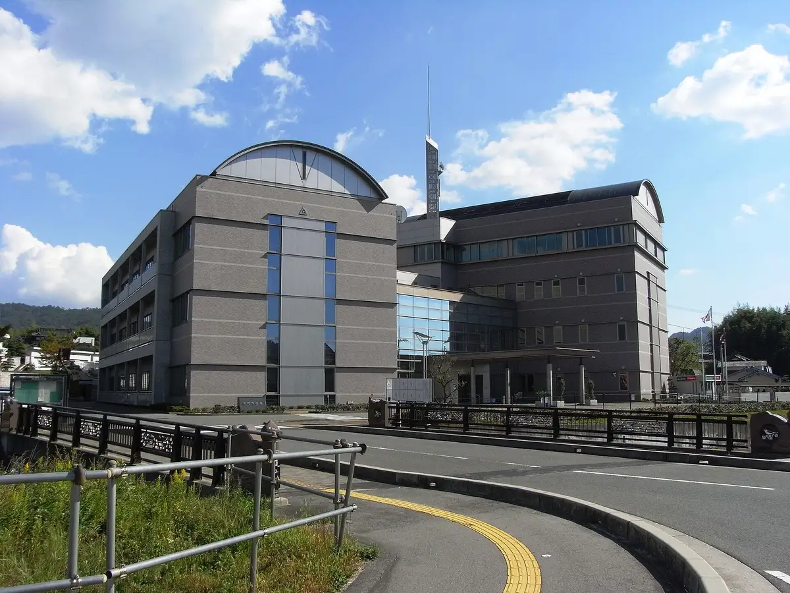

Japan / Hiroshima / Kumano
Kumano
Kumano · Hiroshima
Kumano
Highlighted on the Hiroshima map.

Dining
Yoneda Ya
Kumano, Hiroshima · Official / source link
Heki Cha Ie
Kumano, Hiroshima · Official / source link
Oka Han So Main Shop
Kumano, Hiroshima · Official / source link
Fukuedo
Kumano, Hiroshima · Official / source link
Yakiniku Hausu Famirii
Kumano, Hiroshima · Official / source link
Sobakiriraicho
Kumano, Hiroshima · Official / source link
Cafe Sho
Kumano, Hiroshima · Official / source link
Oishii Shukaijo Heiwa Sono Kumano Mise
Kumano, Hiroshima · Official / source link
my-cafe
Kumano, Hiroshima · Official / source link
Patisserie faisunreve
Kumano, Hiroshima · Official / source link
Waki O Shokuji Tokoro
Kumano, Hiroshima · Official / source link
Rokubungi
Kumano, Hiroshima · Official / source link
Yoshoku Dainingunakamura
Kumano, Hiroshima · Official / source link
O Konomi Yaki
Kumano, Hiroshima · Official / source link
Shokuji Tokoro Da Kane
Kumano, Hiroshima · Official / source link
tomobio drink stand
Kumano, Hiroshima · Official / source link